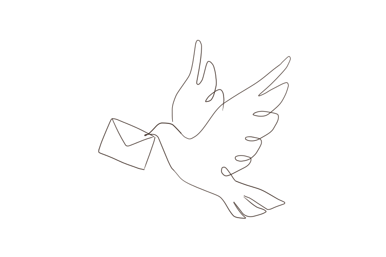

from
Kuwamoto Misaki
桑本 美咲 Web Designer

想いが伝わる ホームページを。
教室・イベントのチラシやホームページを、
デザインから公開までひとりで
scroll
WORKS 制作実績
CONCEPT コンセプト
想いを、届く形に。
教室のお知らせ、バザーのご案内、地域のイベント。
身近な場所には、たくさんの「伝えたい想い」があります。
その想いを、手紙を届けるようにていねいに受け取り、
見る人の心に届くかたちへ。
デザインから公開まで、ひとりで寄り添いながらお手伝いします。
ABOUT ME 私について
Kuwamoto Misaki
桑本 美咲 Web Designer
はじめまして。Webデザイナーの桑本 美咲です。
デザインからコーディング、公開まで一人で手がけています。
「伝えたいけれど、どう形にすればいいかわからない」
そんな想いに寄り添えるものづくりを大切にしています。